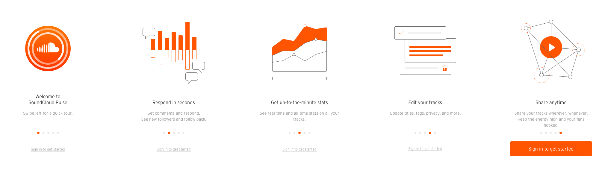
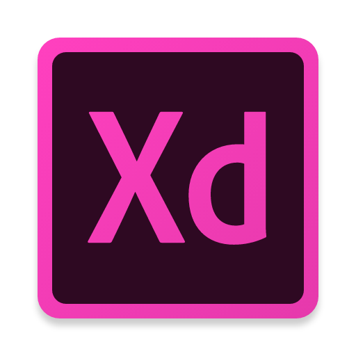
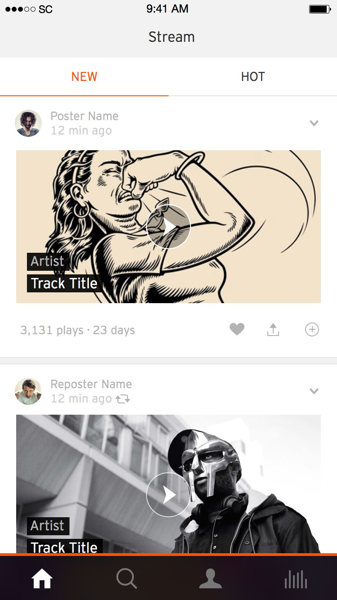
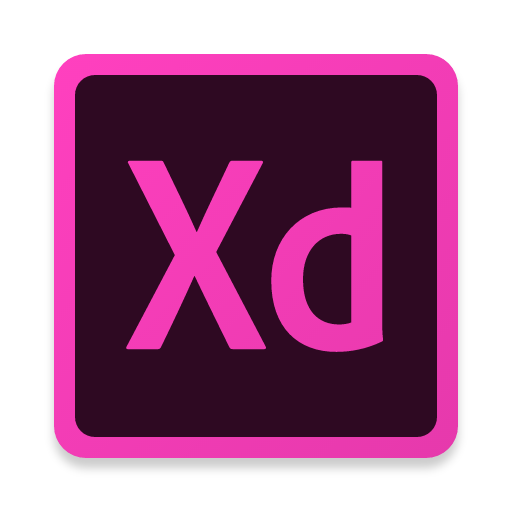
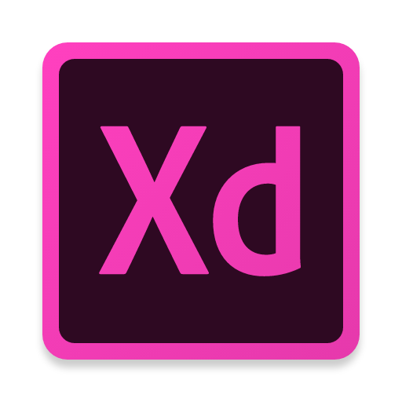

Prototyping at
SoundCloud
Who are we?
Jan Monschke
Frontend Engineer @ SoundCloud
@thedeftone
|
@janmonschke
Svana Ingolfsdottir
Product Engineer @ SoundCloud
@svanasc
Prototyping
? ü§î
Flows
Animations

all 'dem toolz

and many more...
Framer
InVision
Principle
Prototyping @
SoundCloud
High Fidelity Prototyping
A prototype that does not
feel
like a prototype.
High Fidelity Prototyping
A fully functioning app / site
Real production data
”Same” design like
the real thing
™
Users are presented with their real account data
”Simpler” implementation (e.g. performance)
Why HiFi?
Immersion
Make use of familiarity
Less guidance / more freedom
Results more trustworthy / real
Fulfill expectations
Disadvantages of HiFi prototyping
More expensive
(⏲ + üí∞)
Works better for existing products
A bit slower than using a dedicated tool
How does RN play a role here?
Prototyping app written in Swift
Wanted to prototype a new stream
Prototyper busy with other prototypes
React Native was brand new (April '15)
Curiosity and capacity from web devs

2 weeks development time üéâ
Users loved it üòç
Our new setup
Swift -> React Native
Complete clone of the iOS app
Faster turnaround
demo
How do we test this?
Users in the office
Diary studies
Internal testing
Learnings
Barrier to entry lower
Learning curve is smaller than Java/Swift/Obj C
Designers can more easily contribute
Bridge between design and development
Knowledge distribution
Cross platform
Two platforms but less developers
More people can be involved in the process
No audio support
Thanks for your attention!
We're happy to answer your questions üëå


 
